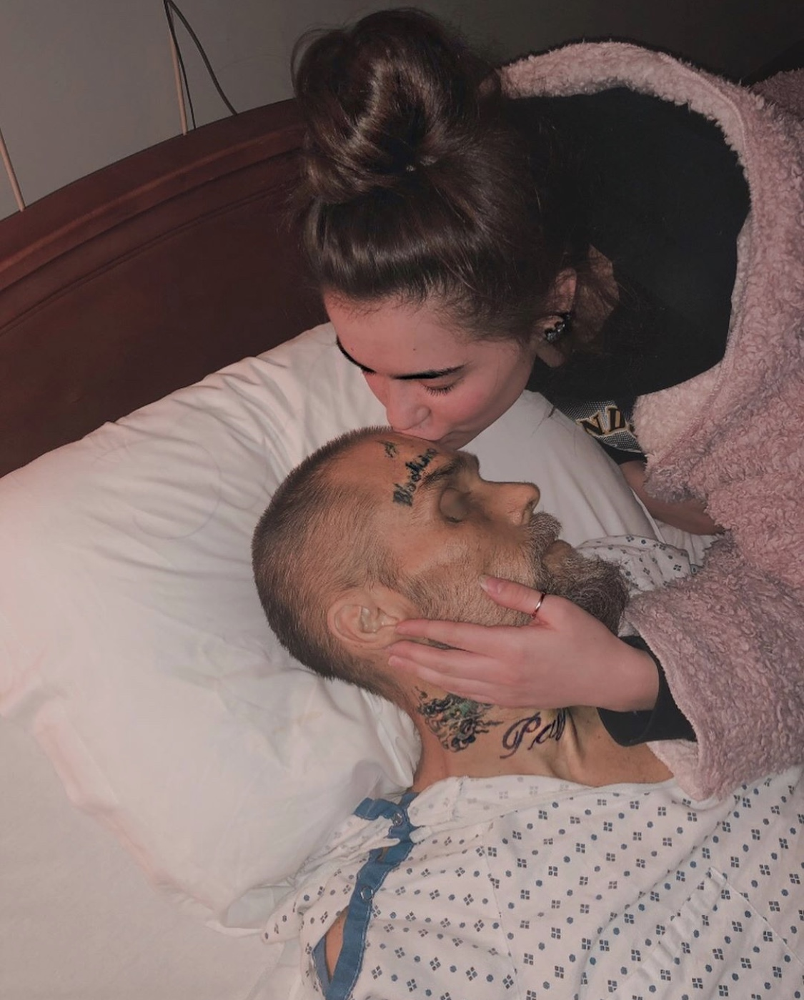
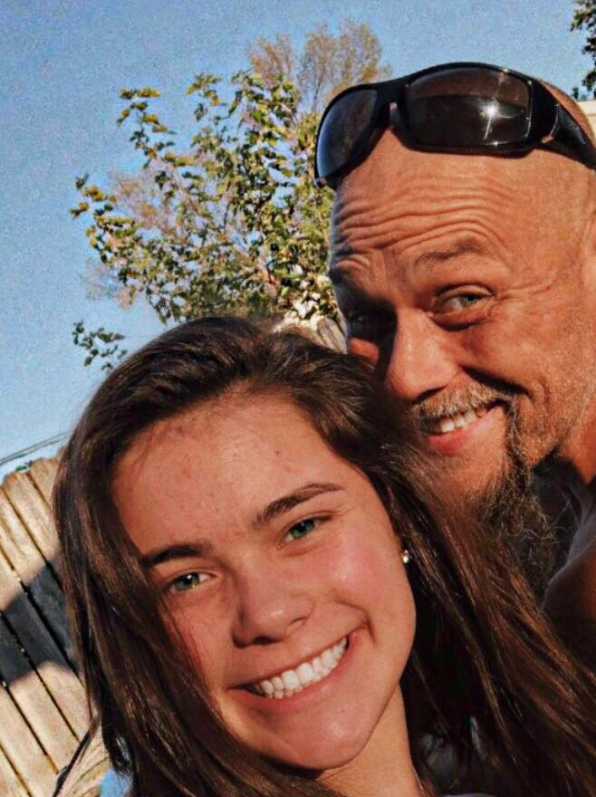
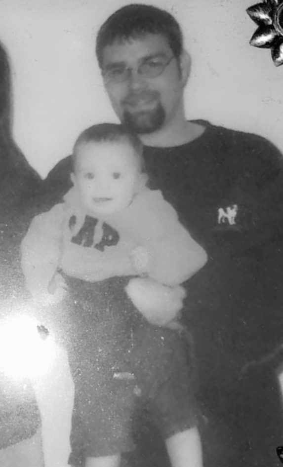

Discription: I wrote this about my dad and I; never take time for granted. Here are samples of my chapters i've wrote.
"Ungrateful."
I was never pleased with who my father was; he was caught up on drugs and was always heading down the wrong road. I would say I was somewhat embarrassed of him because he wasn’t the “typical father.” He was more living life to his fullest; but at the same time reaching his lowest point in life. He never had a stable job, stable income nor a stable place to stay at. He was always depending on others with all his baggage; mentally and physically. He was always in and out of trouble and when he was “off it” he wasn’t someone you’d want to spend your time with. Now looking back I guilt how I felt and thought of him. I never appreciated him enough; not as much as I should’ve. He was more than all the baggage and mess ups. I’ve learned everyone is human, and no one. Absolutely no one is perfect, everyone struggles and has their own kind of baggage. He was an amazing artist and musician; he had the prettiest voice and was an phenomenal guitar player. His drawings showed his thoughts; his mind was dark and he was numb. As his emotions of hurt and sadness showed through his passion of music. No one truly took the time to look more in depth of his drawing and no one seemed to truly listen to his songs. What I call his “cry for help.” Unfortunately, everything was too late to help such a lost; hurting soul.
"Missing."
Missing my dad was the normal. He was never around and only popped up when he was done with his “drug runs.” Although knowing my dad was still alive made missing him easier; knowing I would eventually see him and that he was just a call away. Now that the tables have turned, knowing he isn’t here was an eye opener for my soul. You truly have to appreciate every moment you have for someone. “Never take time for granted.” is the most meaningful statement. It hits different when you realized you have all your lasts with someone and there is nothing you could possibly do. When my dads passing was the most recent I started dwelling more and more how I wish i would’ve done more; later I realized that wasn’t healthy and I simply needed to be grateful with having an opportunity to even making the moments I did with my father. Missing him came in waves and I’ve never felt so much pain, anger and hurt all at once.
"Forever."
As experiencing what I did with my dad’s ordeal; I never knew how meaningless forever really is. Yes, you can love, despise or remember someone forever. Although you’ll never have someone forever. You can say you’ll miss someone forever, but in the future it dies down because simply they’re not there and your whole routine totally switches. A year ago I thought I had forever with my dad; I had no worries and thought he’d be the one seeing me graduate, being there for all my birthday’s and even walking down the aisle. Until I had to leave school October 31 and I went and we had a heart to heart conversation about all the things he’ll be missing out and how we have so little time left. At this time I really didn’t want to be on this earth; struggled with depression a lot and this situation made it worse. I would've done anything to take my dad’s place, because he wanted to be here more than I did. My dad was the most fearless person I knew; until that day he cried to me and he was scared to take his last breath and how badly he wanted me to be there since he was there when I took my first breath. I’ve learned to always appreciate someone while they are here, you never know when anyone's last day is. That is the sad truth. My dad and I would always say “i love you forever and always” and it makes me ponder now, how is there supposed to be always and forever if there is no him?